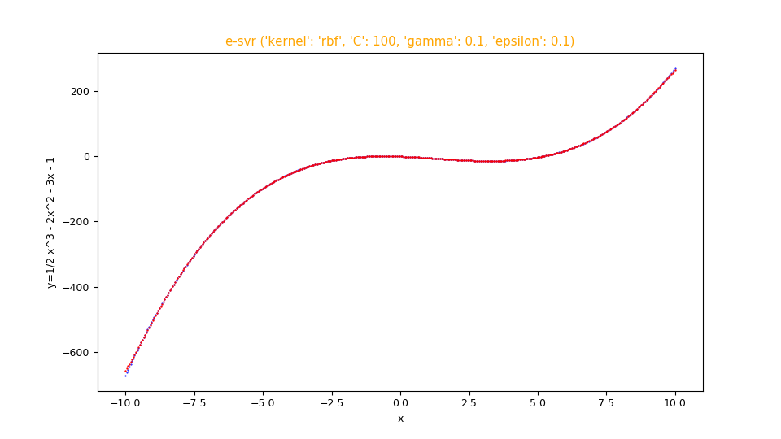

Fitting functions with a configurable Support Vector Regressor
This post deals with the approximation of real mathematical functions to one or more real variables using a Support Vector Regressor without writing code but only acting on the command line of Python scripts that implement the functionality of:
- Regressor Configuration and training
- Prediction and error calculation
To get the code please see the paragraph Download of the complete code at the end of this post.
For the generation of synthetic training and test datasets, the following common tools (available in the repository) will be used:
-
fx_gen.pyfor the real-valued scalar functions of one real-valued variable $f \colon [a,b] \to {\rm I\!R}$ -
fxy_gen.pyfor the real-valued scalar functions of two real-valued variables $f(x,y) \colon [a,b] \times [c,d] \to {\rm I\!R}$ -
pcm2t_gen.pyfor parametric curves on the plane, so real-valued vector functions $f(t) \colon [a,b] \to {\rm I\!R \times \rm I\!R}$ -
pmc3t_gen.pyfor parametric curves in space, so real-valued vector functions $f(t) \colon [a,b] \to {\rm I\!R \times \rm I\!R \times \rm I\!R}$
-
fx_scatter.pyfor the real scalar generator functions of one real variable -
fxy_scatter.pyfor the real scalar generator functions of two real variables -
pmc2t_scatter.pyfor parametric curves on the plane -
pmc3t_scatter.pyfor parametric curves in space
Regressor Configuration and training
In this chapter two programs are presented: fit_func_esvr.py and
fit_func_nusvr.py
which technically are wrappers respectively of the classes
sklearn.svm.SVR and
sklearn.svm.NuSVR
of the SciKit-Learn library and their purpose is to allow the use of the underlying regressors to fit functions
without having to write code but only acting on the command line.
In fact through the argument --svrparams the user passes a series of hyper-parameters to adjust the behavior of the'underlying SVR algorithm
and others to configure its learning phase.
In addition to the parameters of the underlying regressor the program supports its own arguments to allow the user to pass
the training dataset and on which file to save the trained model.
Both programs are of type M.I.M.O., that is Multiple Input Multiple Output:
are designed to approximate a function of the shape $f \colon \rm I\!R^n \to \rm I\!R^m$ using in the implementation
the sklearn.multioutput.MultiOutputRegressor class.
The format of the input datasets is in csv format (with header), with $n+m$ columns, of which the first $n$ columns contain the values of the $n$ independent variables and
the last $m$ containing the values of the dependent variables.
Usage of the fit_func_esvr.py program
To get the program usage you can run this following command:
$ python fit_func_esvr.py --helpusage: fit_func_esvr.py [-h] [--version] --trainds TRAIN_DATASET_FILENAME
--outputdim NUM_OF_DEPENDENT_COLUMNS --modelout
MODEL_FILE [--dumpout DUMPOUT_PATH]
[--svrparams SVR_PARAMS]
fit_func_esvr.py fits a multiple-input multiple-output function dataset using
a configurable Epsilon-Support Vector Regressor
optional arguments:
-h, --help show this help message and exit
--version show program's version number and exit
--trainds TRAIN_DATASET_FILENAME
Train dataset file (csv format)
--outputdim NUM_OF_DEPENDENT_COLUMNS
Output dimension (alias the number of dependent
columns, that must be last columns)
--modelout MODEL_FILE
Output model file
--svrparams SVR_PARAMS
Parameters of Epsilon-Support Vector Regressor
constructor-
-h, --help: shows the usage of the program and ends the execution.
-
--version: shows the version of the program and ends the execution.
-
--trainds: path (relative or absolute) of a two-column csv file (with header) that contains the dataset to be used for the training;
this file can be generated synthetically e.g. via the program
fx_gen.py. or be a dataset actually obtained by measuring a scalar and real phenomenon that depends on a single real-valued variable.
-
--outputdim:
the $n$ number of independent variables that are the first $n$ columns of the csv dataset;
the rest of the columns on the right are the $m$ dependent variables accordingly.
-
--modelout: path (relative or absolute) to a file where to save the trained model in joblib format (.jl).
-
--svrparams:
list of parameters to pass to the regression algorithm below;
see documentation of
sklearn.svm.SVR.
Usage of the fit_func_nusvr.py program
To get the program usage you can run this following command:
$ python fit_func_nusvr.py --helpusage: fit_func_nusvr.py [-h] [--version] --trainds TRAIN_DATASET_FILENAME
--outputdim NUM_OF_DEPENDENT_COLUMNS --modelout
MODEL_FILE [--dumpout DUMPOUT_PATH]
[--svrparams SVR_PARAMS]
fit_func_nusvr.py fits a multiple-input multiple-output function dataset using
a configurable Nu-Support Vector Regressor
optional arguments:
-h, --help show this help message and exit
--version show program's version number and exit
--trainds TRAIN_DATASET_FILENAME
Train dataset file (csv format)
--outputdim NUM_OF_DEPENDENT_COLUMNS
Output dimension (alias the number of dependent
columns, that must be last columns)
--modelout MODEL_FILE
Output model file
--svrparams SVR_PARAMS
Parameters of Nu-Support Vector Regressor constructor-
-h, --help: shows the usage of the program and ends the execution.
-
--version: shows the version of the program and ends the execution.
-
--trainds: path (relative or absolute) of a two-column csv file (with header) that contains the dataset to be used for the training;
this file can be generated synthetically e.g. via the program
fx_gen.py. or be a dataset actually obtained by measuring a scalar and real phenomenon that depends on a single real-valued variable.
-
--outputdim:
the $n$ number of independent variables that are the first $n$ columns of the csv dataset;
the rest of the columns on the right are the $m$ dependent variables accordingly.
-
--modelout: path (relative or absolute) to a file where to save the trained model in joblib format (.jl).
-
--svrparams:
list of parameters to pass to the regression algorithm below;
see documentation of
sklearn.svm.NuSVR.
Prediction and error calculation
In this chapter the program predict_func.py is presented
and which purpose is to make predictions on a test dataset applying it to a previously trained e-SVR or nu-SVR model
respectively via the program fit_func_esvr.py or
fit_func_nusvr.py,
always without having to write code but only through the command line.
In fact, this program supports arguments through which the user passes the previously trained model, the test dataset
and the error measurements to be calculated between the predictions and the true values.
The format of the incoming test datasets is identical to that of the training programs mentioned above; obviously here the last columns
(those of dependent variables) are only used to compare the predicted values with the true values by calculating passed error measurements.
Usage of the predict_func.py program
To get the program usage you can run this following command:
$ python predict_func.py --helpusage: predict_func.py [-h] [--version] --model MODEL_FILE --ds DF_PREDICTION
--outputdim NUM_OF_DEPENDENT_COLUMNS --predictionout
PREDICTION_DATA_FILE
[--measures MEASURES [MEASURES ...]]
predict_func.py makes prediction of the values of a multiple-input multiple-
output function with a pretrained Standard Vector Regressor model
optional arguments:
-h, --help show this help message and exit
--version show program's version number and exit
--model MODEL_FILE model file
--ds DF_PREDICTION dataset file (csv format)
--outputdim NUM_OF_DEPENDENT_COLUMNS
Output dimension (alias the number of dependent
columns, that must be last columns)
--predictionout PREDICTION_DATA_FILE
prediction data file (csv format)
--measures MEASURES [MEASURES ...]
List of built-in sklearn regression metrics to compare
prediction with input dataset-
-h, --help: shows the usage of the program and ends the execution.
-
--version: shows the version of the program and ends the execution.
-
--model: path (relative or absolute) to the file in joblib (.jl) format of the model generated by a training program mentioned above.
-
--ds: path (relative or absolute) of the csv file (with header) that contains the input dataset on which to calculate the prediction.
-
--outputdim:
the $n$ number of independent variables that are the first $n$ columns of the csv dataset;
the rest of the columns on the right are the $m$ dependent variables accordingly.
-
--predictionout: path (relative or absolute) of the csv file to generate that will contain the prediction, that is the approximation of the function applied to the input dataset.
-
--measures: list of measurements to be calculated by comparing the true values of the input dataset and the predicted output values;
the list of supported metrics is defined in SciKit Learn Regression Metrics.
An example of using of all the programs
Suppose you want to approximate the function $$f(x)=\frac {1}{2} x^3 - 2 x^2 - 3 x - 1$$ in the range $[-10.0,10.0]$. Keeping in mind that np is the alias of NumPy library, the translation of this function in lambda body Python syntax is:
0.5*x**3 - 2*x**2 - 3*x - 1$ python fx_gen.py \
--dsout mytrain.csv \
--funcx "0.5*x**3 - 2*x**2 - 3*x - 1" \
--xbegin -10.0 \
--xend 10.0 \
--xstep 0.01$ python fx_gen.py \
--dsout mytest.csv \
--funcx "0.5*x**3 - 2*x**2 - 3*x - 1" \
--xbegin -10.0 \
--xend 10.0 \
--xstep 0.0475To this we intend to make a regression by
fit_func_esvr.py
passing to the underlying regressor: kernel: rbf, C: 100, gamma: 0.1, epsilon: 0.1;
then run the following command:
$ python fit_func_esvr.py \
--trainds mytrain.csv \
--modelout mymodel.jl \
--outputdim 1 \
--svrparams "'kernel': 'rbf', 'C': 100, 'gamma': 0.1, 'epsilon': 0.1"Now we intend to perform the prediction and calculation of the error using the measurements mean_absolute_error and mean_squared_error; then execute the following command:
$ python predict_func.py \
--model mymodel.jl \
--ds mytest.csv \
--outputdim 1 \
--predictionout mypred.csv \
--measures mean_absolute_error mean_squared_error--measures
and are acceptable: the first around $0.4$ and the second around $1.9$.Note: Given the stochastic nature of the training phase, your specific results may vary. Consider running the training phase a few times.
Finally you want to make the comparative display of the test dataset with the prediction; therefore run the following command:
$ python fx_scatter.py \
--ds mytest.csv \
--prediction mypred.csv \
--title "e-svr ('kernel': 'rbf', 'C': 100, 'gamma': 0.1, 'epsilon': 0.1)" \
--xlabel "x" \
--ylabel "y=1/2 x^3 - 2x^2 - 3x - 1"Note: Given the stochastic nature of the training phase, your specific results may vary. Consider running the training phase a few times.

Figure with dispersion graphs generated by the program
fx_scatter.py showing the fitting in red overlay of the function $f(x)=\frac {1}{2} x^3 - 2 x^2 - 3 x - 1$
and the original function below in blue.
If you want to make a regression by fit_func_nusvr.py
switching to the underlying regressor: C: 10, gamma: auto
then execute the following command:
$ python fit_func_nusvr.py \
--trainds mytrain.csv \
--modelout mymodel.jl \
--outputdim 1 \
--svrparams "'C': 10, 'gamma': 'auto'"predict_func.py command with the same parameters as above
and finally to generate the dispersion graphs run the following command:
$ python fx_scatter.py \
--ds mytest.csv \
--prediction mypred.csv \
--title "nu-svr ('C': 10, 'gamma': 'auto')" \
--xlabel "x" \
--ylabel "y=1/2 x^3 - 2x^2 - 3x - 1"-
one-variable-function/svr/examplesfor examples on the fitting of real-valued scalar functions of one real-valued variable via SVR. -
two-variables-function/svr/examplesp for examples on the fitting of real-valued scalar functions of two real-valued variables via SVR. -
parametric-curve-on-plane/svr/examplesfor examples about fitting parametric curves on the plane via SVR. -
parametric-curve-in-space/svr/examplesfor examples about fitting parametric curves on the space via SVR.
Download of the complete code
The complete code is available at GitHub.
These materials are distributed under MIT license; feel free to use, share, fork and adapt these materials as you see fit.
Also please feel free to submit pull-requests and bug-reports to this GitHub repository or contact me on my social media channels available on the top right corner of this page.